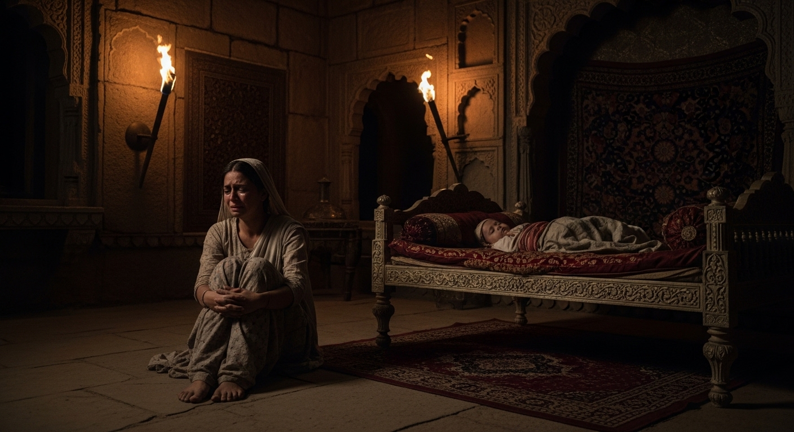
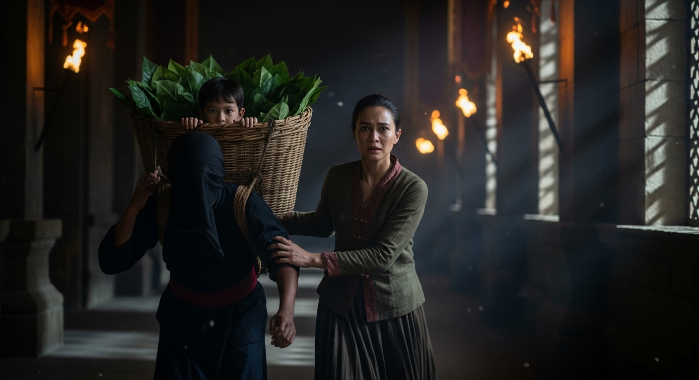

एकांकी का सारांश (Summary):
'दीपदान' डॉ. रामकुमार वर्मा द्वारा रचित एक अत्यंत प्रसिद्ध ऐतिहासिक एकांकी है। यह एकांकी भारतीय इतिहास
(राजपूताना, चित्तौड़) के 'वीर और बलिदान के युग' की कथा कहती है। इसमें मेवाड़ की एक धाय-माँ
'पन्ना धाय' (Panna Dhay) के अप्रतिम त्याग और देशभक्ति का वर्णन है। पन्ना धाय चित्तौड़
के असली राजकुमार 'उदयसिंह' (राणा सांगा के पुत्र) को बचाने के लिए, अपने ही सगे जवान बेटे 'चन्दन' का क्रूर
बनवीर के हाथों बलिदान (दीपदान) कर देती है। यह एकांकी भारतीय नारी के असीम साहस, कर्तव्य-निष्ठा और महान
त्याग का अमर चित्र प्रस्तुत करती है।
1. एकांकीकार का परिचय (Author Introduction)
रचनाकार: डॉ. रामकुमार वर्मा (Dr. Ramkumar Verma)
डॉ. रामकुमार वर्मा हिंदी एकांकी-जगत के प्रमुख स्तंभ माने जाते हैं। उन्हें 'ऐतिहासिक एकांकी' का जनक भी कहा
जाता है। उनके नाटकों में इतिहास और कल्पना का सुंदर मिश्रण होता है, जिसके माध्यम से वे भारतीय संस्कृति के
गौरव, राष्ट्रीयता, और महान चारित्रिक मूल्यों (देशभक्ति, बलिदान) को उजागर करते हैं। 'दीपदान' उनकी
सर्वश्रेष्ठ एकांकियों में गिनी जाती है।
2. एकांकी के मुख्य पात्र (Main Characters)
- पन्ना धाय (Panna Dhay): चित्तौड़ के राजकुमार उदयसिंह की धाय (आया/ Foster mother)।
वह अत्यंत स्वामी-भक्त, साहसी और देशप्रेमी महिला है, जो मेवाड़ के असली वारिस को बचाने के लिए अपने
बेटे का बलिदान देती है। एकांकी की मुख्य नायिका।
- कुँवर उदयसिंह (Kunwar Uday Singh): मेवाड़ के स्वर्गीय महाराणा सांगा का सबसे छोटा
बेटा (उम्र 14 वर्ष)। वह मेवाड़ के सिंहासन का असली उत्तराधिकारी (Heir) है।
- बनवीर (Banvir): महाराणा सांगा के भाई पृथ्वीराज का दासी-पुत्र। वह एक क्रूर,
महत्वाकांक्षी और हत्यारा है। उसने महाराणा विक्रमादित्य की हत्या कर दी है और अब मेवाड़ का राजा बनने
के लिए वह कुँवर उदयसिंह को भी मारना चाहता है।
- चन्दन (Chandan): पन्ना धाय का अपना सगा बेटा (उम्र 13 वर्ष)। एक आज्ञाकारी पुत्र।
पन्ना धाय उसी को उदयसिंह के बिस्तर पर सुला देती है।
- कीरत (Kirat): पत्तल उठाने वाला एक सच्चा और स्वामिभक्त बारी (जाति)। वह पन्ना धाय की
मदद करता है और असली राजकुमार (उदयसिंह) को अपनी टोकरी (पत्तलों के बीच) में छिपाकर महल से सुरक्षित
बाहर निकाल ले जाता है।
3. एकांकी की प्रमुख घटनाएँ (Key Events)
- चित्तौड़ में 'दीपदान' का उत्सव: क्रूर बनवीर मेवाड़ का राजा बनना चाहता है। इसके लिए उसे
असली वारिस (कुँवर उदयसिंह) को रास्ते से हटाना (मारना) है। उसने चित्तौड़ के महल में 'तुलजा भवानी' के
मंदिर में 'दीपदान' के नाम पर एक बड़ा उत्सव और नाच-गाना आयोजित किया है, ताकि सारे लोग, सैनिक और उदयसिंह
भी उसमें व्यस्त हो जाएँ और वह आसानी से उदयसिंह की हत्या कर सके।
- पन्ना धाय की सतर्कता: पन्ना धाय बनवीर की इस चाल और षड्यंत्र (Conspiracy) को समझ जाती
है। वह कुँवर उदयसिंह को उत्सव में जाने से रोक देती है और उसे महल में ही सुला देती है। एक गुप्तचर (सामली)
पन्ना को आकर बताती है कि बनवीर ने महाराणा विक्रमादित्य की हत्या कर दी है और अब नंगी तलवार लेकर उदयसिंह
की ओर आ रहा है।
- उदयसिंह को सुरक्षित निकालना: कुँवर उदयसिंह को बचाने का कोई और रास्ता न देखकर पन्ना धाय,
'कीरत बारी' (जो जूठी पत्तलें उठाने का काम करता है) की मदद लेती है। वह सोते हुए उदयसिंह को पत्तलों की
बड़ी टोकरी में छिपाकर कीरत के साथ महल से गुप्त तरीके से बाहर भेज देती है।
- महान बलिदान (द चरमोत्कर्ष / Climax): बनवीर महल में आ रहा है और वह उदयसिंह की जगह खाली
बिस्तर देखकर शक करेगा। इसलिए पन्ना अपने ही बेटे 'चन्दन' को उदयसिंह के कपड़े पहनाकर उसी के बिस्तर (शय्या)
पर सुला देती है। जब बनवीर (शराब के नशे में और नंगी तलवार के साथ) उदयसिंह के कमरे में प्रवेश करता है।
पन्ना धाय उसे रोकने का नाटक करती है (ताकि उसे लगे कि उदयसिंह ही सोया है)। बनवीर निर्दयता से सोए हुए
'चन्दन' को उदयसिंह समझकर अपनी तलवार से मौत के घाट उतार देता है।
- दीपदान की सार्थकता: पन्ना धाय अपने ही लाल 'चन्दन' (जिसका उसने मेवाड़ के रक्षक के रूप
में 'दीपदान' कर दिया था) की लाश के पास खड़ी रह जाती है। उसने अपने कर्तव्य (राजवंश की रक्षा) के लिए अपने
मातृत्व (ममता) और पुत्र प्रेम की बलि चढ़ा दी।
4. महत्वपूर्ण कथन (Important Quotes)
"राजपूतों के घर 'दीपदान' नहीं होता, रक्त-दान होता है, रक्त-दान।"
= पन्ना धाय का बनवीर की चाल पर यह व्यंग्य और चेतावनी भरा कथन है, जो मेवाड़ के असली चरित्र को दर्शाता है।
"मैंने अपने जीवन का दीप... मेवाड़ के इस कुल-दीपक (उदयसिंह) की रक्षा के लिए 'दीपदान' कर दिया है।"
= पन्ना धाय का यह कथन एकांकी के 'शीर्षक' को चरितार्थ करता है।
5. एकांकी का उद्देश्य (Theme)
- उच्चकोटि की देशभक्ति और कर्तव्य-निष्ठा: एकांकी सिखाती है कि राष्ट्र और मातृभूमि
(मेवाड़) की रक्षा के लिए बड़े से बड़ा बलिदान (अपने बच्चे का भी) दिया जा सकता है।
- भारतीय नारी (धाय-माँ) का महान आदर्श: एक साधारण धाय (आया) होते हुए भी पन्ना ने वह कर
दिखाया जो कोई बड़े-बड़े योद्धा नहीं कर सके। उसका चरित्र स्वामीभक्ति की मिसाल है।
- कुटिलता और महत्वाकांक्षा का कुप्रभाव: बनवीर के रूप में सत्ता के लालच और क्रूरता का
घिनौना चेहरा भी दिखाया गया है।

6. परीक्षा उपयोगी प्रश्न-उत्तर (Practice Zone)
प्रश्न 1: पन्ना धाय ने कुँवर उदयसिंह को बनवीर से बचाने के लिए क्या योजना बनाई?
उत्तर: जब पन्ना धाय को पता चला कि क्रूर बनवीर ने विक्रमादित्य को मार
दिया है और वह कुँवर उदयसिंह को मारने आ रहा है, तो उसने तुरन्त एक योजना बनाई। उसने महल में 'जूठी पत्तलें'
उठाने वाले स्वामी-भक्त नौकर 'कीरत बारी' की सहायता ली। पन्ना ने सोते हुए असली 'कुँवर उदयसिंह' को जूठी
पत्तलों की एक बड़ी टोकरी में छिपा दिया और ऊपर से कुछ पत्तलें ढँक दीं। इसके बाद कीरत बारी उस टोकरी को सिर
पर रखकर बनवीर के सैनिकों की नज़रों से छिपता हुआ महल के गुप्त रास्ते से सुरक्षित बाहर निकल गया।
प्रश्न 2: पन्ना धाय ने अपने पुत्र चन्दन का बलिदान (दीपदान) क्यों और कैसे किया?
उत्तर: कुँवर उदयसिंह को कीरत बारी की टोकरी में छिपाकर बाहर भेजने के
बाद, सबसे बड़ी समस्या यह थी कि जब बनवीर कमरे में आएगा तो उदयसिंह के बिस्तर (शय्या) को खाली देखेगा और समझ
जाएगा कि उदयसिंह बाहर भाग गया है। वह सेना भेजकर उन्हें पकड़वा सकता था और मार सकता था।
बनवीर को धोखा देने और मेवाड़ के राजवंश (उदयसिंह) को सुरक्षित समय देने के लिए, पन्ना धाय ने एक अत्यंत
कठोर निर्णय लिया। उसने अपने ही 13 वर्षीय मासूम 'सगे बेटे चन्दन' को उदयसिंह के कपड़े पहनाए और उसे उदयसिंह
के बिस्तर पर सुला दिया। जब क्रूर बनवीर कमरे में आया, तो उसने सोए हुए चन्दन को 'उदयसिंह' समझकर अपनी तलवार
से उसकी हत्या कर दी। इस प्रकार पन्ना धाय ने मेवाड़ (देश) के लिए अपने पुत्र रूपी अमूल्य दीपक का 'दीपदान'
(बलिदान) कर दिया।
प्रश्न 3: 'दीपदान' एकांकी के शीर्षक की सार्थकता (Justification of Title) स्पष्ट कीजिए।
उत्तर: एकांकी का शीर्षक 'दीपदान' दुहरे (Double) अर्थों में सार्थक है।
(1) साधारण अर्थ: बनवीर ने मेवाड़ के लोगों को व्यस्त (Busy) रखने और उदयसिंह की हत्या की
साज़िश रचने के लिए तुलजा भवानी के मंदिर में लड़कियों द्वारा 'दीपदान' (दीपक जलाने) का बड़ा उत्सव रखा था।
(2) गंभीर/प्रतीकात्मक अर्थ (Symbolic Meaning): एकांकी का असली अर्थ पन्ना धाय द्वारा किए
गए 'दीपदान' में छिपा है। पन्ना धाय ने मेवाड़ राज्य के 'कुल-दीपक' (अर्थात् असली फूल/राजकुमार कुंवर
उदयसिंह) को बचाने के लिए अपने घर के 'दीपक' (अर्थात् अपने इकलौते बेटे चन्दन) के प्राणों का बलिदान दे
दिया। इस प्रकार 'चन्दन का बलिदान' ही एकांकी का सच्चा और अभूतपूर्व 'दीपदान' है। अतः एकांकी का यह शीर्षक
बहुत ही कलात्मक और सार्थक (Appropriate) है।